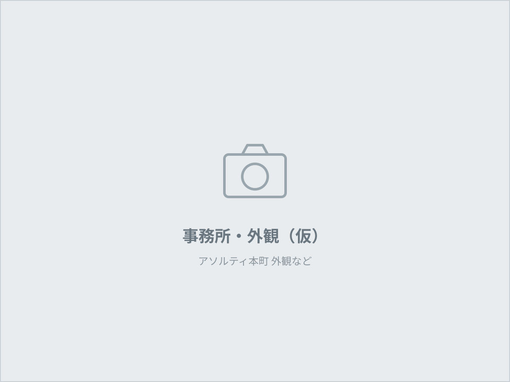

MESSAGE
現場で信頼を積み上げる
株式会社CORLYは、大阪市中央区を拠点とする清掃会社です。空室清掃、日常・定期清掃、店舗清掃を通じて、管理会社様・オーナー様・店舗様の「現場を任せられる相手」であり続けることを目指しています。
作業の基準を決めること、写真で結果を残すこと、代表が直接対応すること。この3つを守り、関西一円で信頼を積み上げていきます。
代表取締役 岩崎 大樹
PROFILE
会社概要
| 社名 | 株式会社CORLY（コーリー） |
|---|---|
| 代表取締役 | 岩崎 大樹 |
| 設立 | 2024年10月 |
| 所在地 | 〒541-0053 大阪府大阪市中央区本町2-3-4 アソルティ本町4F Googleマップで見る |
| 連絡先 | TEL 06-4256-2693 FAX 06-4560-9079 MAIL info@corly.co.jp |
| 事業内容 |
|
| 有資格者 | JIS品質管理責任者／掃除能力検定士 |
| 対応エリア | 大阪府・兵庫県・京都府・奈良県・滋賀県・和歌山県（その他は応相談） |
| 法人番号 | 7120001269368 |
お見積・ご相談は無料です
1室だけ、1回だけのご依頼でも構いません。現場を確認してからお見積を提示します。